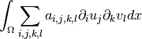

Generic elliptic brick¶
This brick adds an elliptic term on a variable of a model. The shape of the elliptic term depends both on the variable and a given coefficient. This corresponds to a term:
where  is the coefficient and
is the coefficient and  the variable. The coefficient can
be a scalar, a matrix or an order four tensor. The variable can be vector valued
or not. This means that the brick treats several different situations. If the
coefficient is a scalar or a matrix and the variable is vector valued then the
term is added componentwise. An order four tensor coefficient is allowed for
vector valued variable only. The coefficient can be constant or described on a
FEM. Of course, when the coefficient is a tensor described on a finite element
method (a tensor field) the corresponding data can be a huge vector. The
components of the matrix/tensor have to be stored with the fortran order
(columnwise) in the data vector corresponding to the coefficient (compatibility
with BLAS). The symmetry and coercivity of the given matrix/tensor is not verified
(but assumed).
the variable. The coefficient can
be a scalar, a matrix or an order four tensor. The variable can be vector valued
or not. This means that the brick treats several different situations. If the
coefficient is a scalar or a matrix and the variable is vector valued then the
term is added componentwise. An order four tensor coefficient is allowed for
vector valued variable only. The coefficient can be constant or described on a
FEM. Of course, when the coefficient is a tensor described on a finite element
method (a tensor field) the corresponding data can be a huge vector. The
components of the matrix/tensor have to be stored with the fortran order
(columnwise) in the data vector corresponding to the coefficient (compatibility
with BLAS). The symmetry and coercivity of the given matrix/tensor is not verified
(but assumed).
This brick can be added to a model md thanks to two functions. The first one is:
size_type getfem::add_Laplacian_brick(md, mim, varname, region = -1);
that adds an elliptic term relatively to the variable varname of the model
with a constant coefficient equal to  (a Laplacian term). This
corresponds to the Laplace operator. mim is the integration method which will
be used to compute the term. region is an optional region number. If it is
omitted, it is assumed that the term will be computed on the whole mesh. The
result of the function is the brick index in the model.
(a Laplacian term). This
corresponds to the Laplace operator. mim is the integration method which will
be used to compute the term. region is an optional region number. If it is
omitted, it is assumed that the term will be computed on the whole mesh. The
result of the function is the brick index in the model.
The second function is:
size_type getfem::add_generic_elliptic_brick(md, mim, varname, dataexpr, region = -1);
It adds a term with an arbitrary coefficient given by the expression dataexpr which has to be a regular expression of the weak form language (like “1”, “sin(X[0])” or “Norm(u)” for instance) even depending on model variables (except for the complex version where it has to be a declared data of the model)
Note that very general equations can be obtained with this brick. For instance, linear anisotropic elasticity can be obtained with a tensor data. When an order four tensor is used, the corresponding weak term is the following

where is the order four tensor and is
the partial derivative with respect to the  variable of the
component
variable of the
component  of the unknown
of the unknown  .
.  is the test function.
However, for linear isotropic elasticity, a more adapted brick is available (see
below).
is the test function.
However, for linear isotropic elasticity, a more adapted brick is available (see
below).
The brick has a working complex version.

前のトピックへ
次のトピックへ
Download
Main documentations
- GetFEM++ User documentation
- Python Interface
- Matlab Interface
- Scilab Interface
- Gmm++
- GetFEM++ project